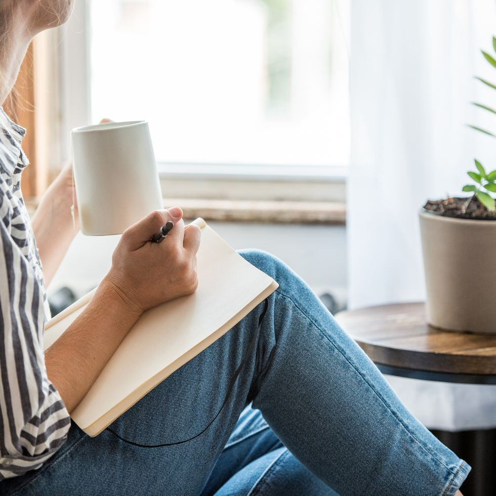
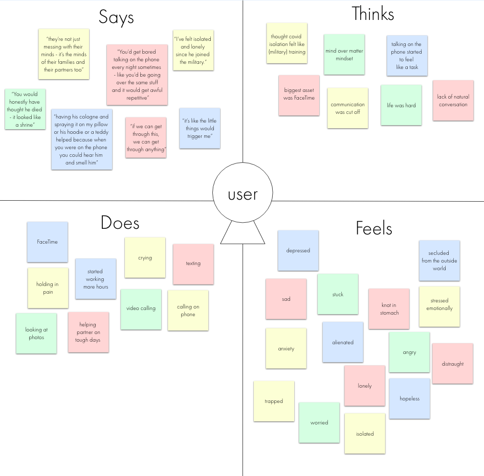
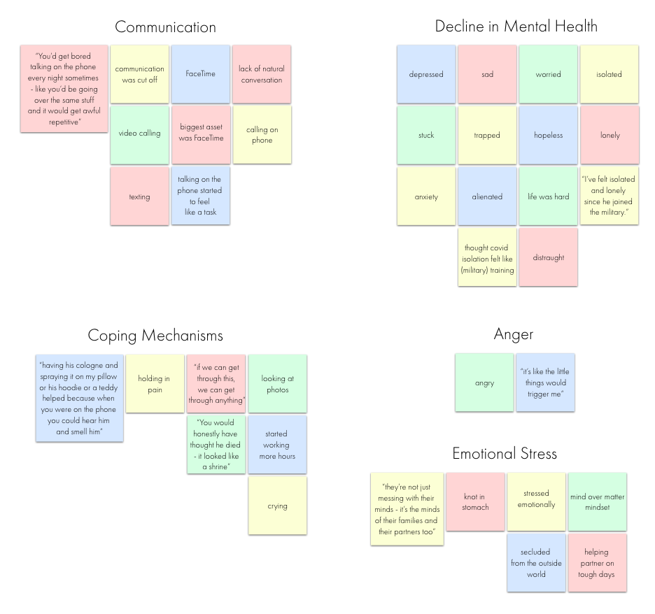
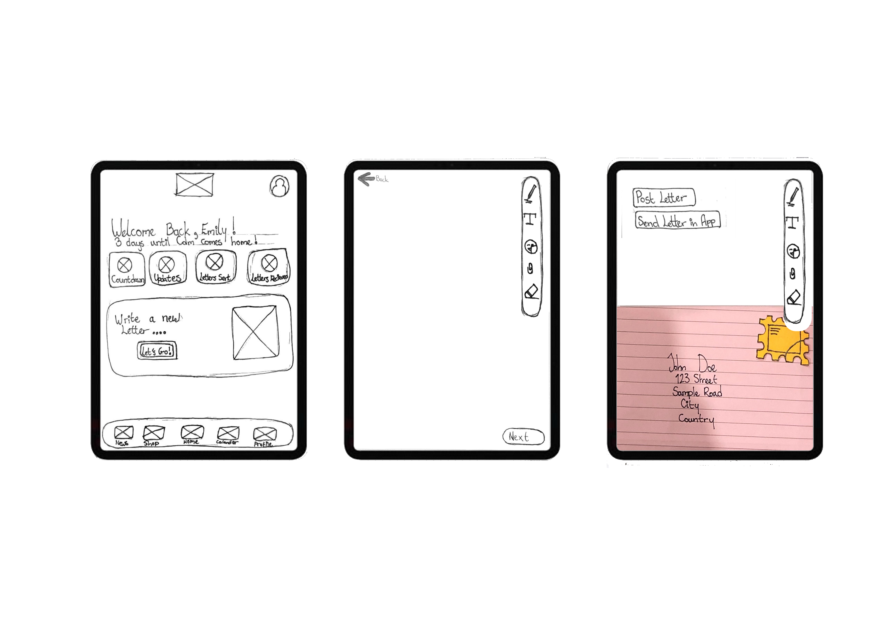
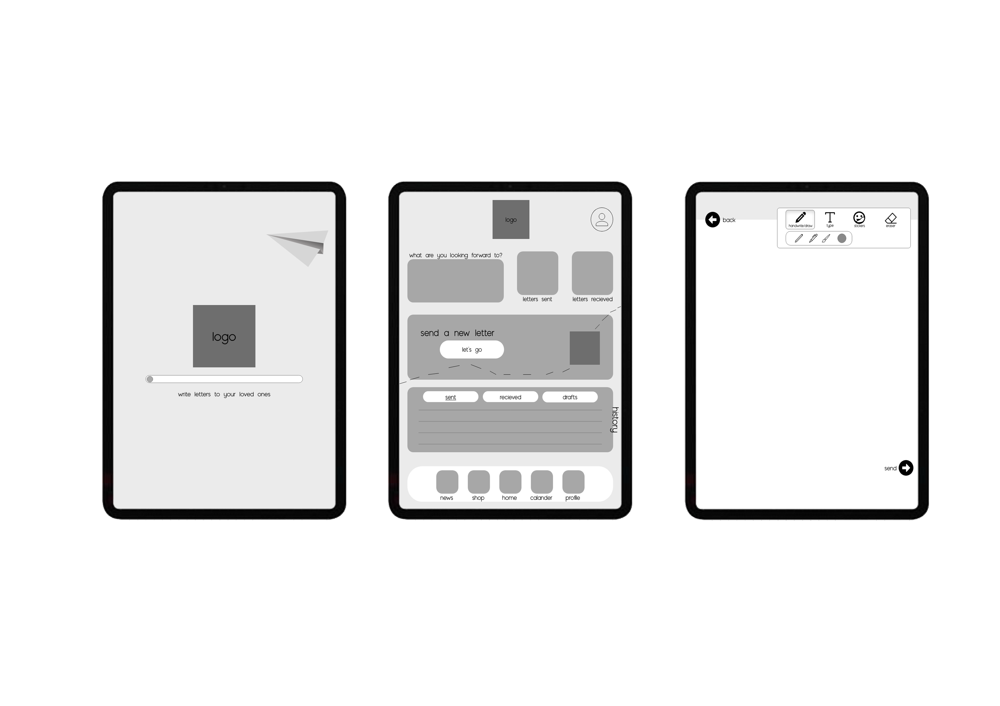

RSA Design Competition
creating a innovative solution for combating social isolation and loneliness
role: sole ux/ui designer | client: rsa student design awards | tools: adobe xd
the vision
the project vision is to explore how i might use entertainment technology to connect people remotely to tackle the increase social isolation and loneliness which prevailed during and after the covid-19 pandemic - paying particular attention to the reality that relationship and families of all sizes, shapes and backgrounds were unable to see each other in person and lost so much as a result.
what did i do?i was the sole ux designer/researcher on this project, conducting everything from research to usability tests and creating prototypes from low fidelity paper prototypes to digital, interactive hi-fi designs. i was responsible for the invention of this product and determining the overall design direction, while communicating with my lecturer and peers to gain feedback on my work. desk researchi searched through scholarly articles focused on mental health during covid-19, particularly for the military and frontline workers. i wanted to explore the challenges faced by people who are often separated from their loved ones due to their taxing jobs and distance, and who may rely on technology or not have time for communication. i also researched the importance of handwritten letters for these individuals and wanted to explore ways to make the process more efficient, creative, and accessible. |
 |

|
user stories
|
empathy mapthe empathy map is to gain a better understanding of the users in the usability tests conducted. this is to gain a better sense of empathy, look and see how a person feels, look into what they say during the tests, what do they do, what is their boy language like and how do they think? |
 |
|  |
affinity diagramwith the affinity diagram, you take all the sticky notes from the empathy map and divide them up into different headings. the headings aren't preplanned - if different sticky notes look like they connect with each other you put them in the same pile. afterwards, you get the headings of the main problems you need to solve based on the user feedback from interviews. user pain points
|
lo-fi prototypesketched screens and states were photographed and inserted into adobe xd for usability testing purposes. Research participant feedback was noted. iterations of lo-fi prototype based on feedback
|
 |
|  |
mid-fi prototypefor mid-fi, i started looking into how the app for function, how the animations would look in really bringing this product to life. i kept the user in mind when designing and even though there was no colour or textures - i still wanted to make it feel real. iterations of mid-fi prototype based on feedback
|
hi-fi prototype
|

|